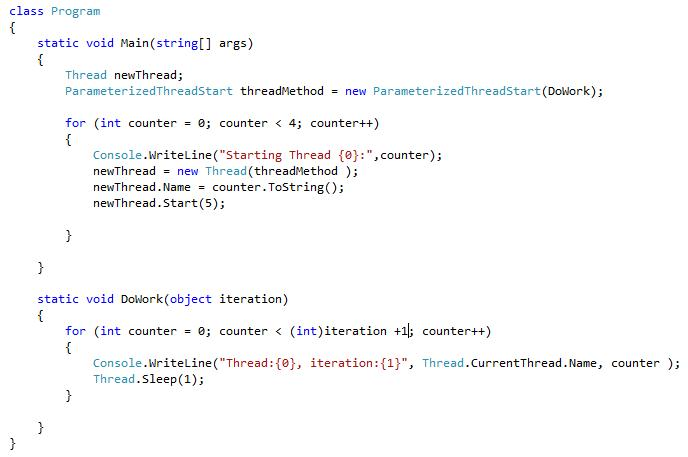
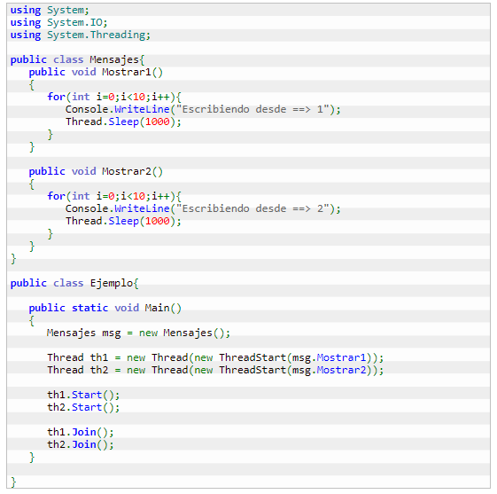

Creación de hilos con parámetros en C#
Introducción
Muchos lenguajes de programación permiten la creación de hilos o Threads en un programa. De forma resumida, los hilos son un mecanismo mediante el cual podemos dividir una aplicación en diferentes partes que se pueden ejecutar de forma paralela, existiendo mecanismos por los que pueden compartir información.
C# ofrece un mecanismo muy sencillo de implementar hilos, basado en la utilización de la clase Thread. El constructor de esta clase recibe como parámetro el método o función que hay que ejecutar en paralelo. Este parámetro se indica mediante la utilización de un delegado, que es el mecanismo que, entre otras cosas, se utiliza en .NET para utilizar punteros a funciones de forma segura. La firma del delegado no incluye ningún parámetro, por lo que únicamente es posible crear hilos de forma directa sobre métodos y funciones que no requieran parámetros de entrada ni de salida. En los siguientes ejemplos muestro un caso sencillo de creación de un hilo y otro en el que explico una forma de poder crear un hilo con entrada y salida de parámetros.
En el siguiente ejemplo se dispone de una clase con dos métodos que muestran mensajes por pantalla. El objetivo es crear dos hilos, uno para cada uno de los métodos y ejecutarlos de forma paralela, de forma que podamos ver como resultado cómo se van intercalando los mensajes escritos por cada método.
Conclusiones:
Por supuesto todo lo anterior son únicamente ejemplos muy sencillos, ya que la programación de un sistema multihilo suele ser bastante compleja debido al indeterminismo implícito en la ejecución de múltiples hilos de ejecución, que normalmente comparten recursos o dependen unos de otros. En cualquier caso sí que nos permite apreciar la facilidad con la que se pueden crear estas estructuras en C#, olvidándonos de complejas sintaxis y librerías, y centrándonos únicamente en los requisitos de nuestro sistema.